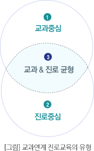
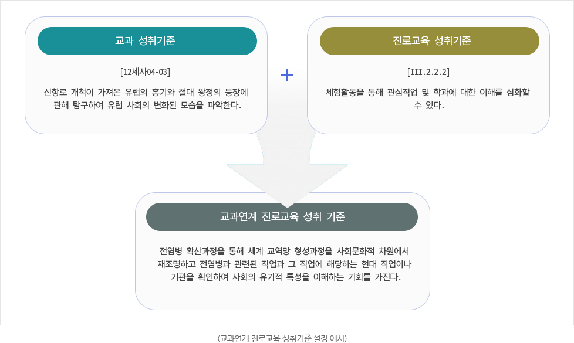

교과연계 진로교육 자료
교과연계 진로교육이란?
교과연계 진로교육은 각 교과의 성취기준에 ‘학교 진로교육 목표와 성취기준’을 융합하여 운영하는 것으로, 진로교육 요소가 반영된 교과 수업을 의미합니다.
교과연계 진로교육 필요성
사회가 점차 복잡화되고 교육과 관련된 대·내외 환경이 변화하고 있는 상황입니다. 따라서 학교교육은 기존의 단순지식과 개념을 전달하는 방식에서 벗어나 학교에서 배우는
내용을 직접적으로 개인의 삶에 있어 실제적인 의미를 부여하는 교육으로 융합되고 연계되어야 합니다.
교과연계 진로교육 필요성
과와 진로에 대한 비중에 따라 1)교과중심 연계, 2) 진로중심 연계, 3) 교과&진로균형 연계로 구분할 수 있습니다.

1)교과중심 연계, 2) 진로중심 연계, 3) 교과&진로균형 연계로 구분할 수 있습니다.
-
1교과중심은 연계의 비중이 교과 내용 학습이 중심이며, 진로교육 관련 내용의 비중이 다소 낮습니다.
예) 교과 수업에서 관련 직업을 언급하거나 수업 마무리 단계에서 관련 직업군을 생각해 볼 수 있는 질문을
제기하는 수준
-
2진로중심은 연계의 비중이 진로교육 관련 내용이 중심이며 교과 내용은 방법적으로 활용하는 것을 말합니다.
예) 수학 소인수 분해 단원에서 ‘나를 소인수분해하기＇와 같은 구체적 활동을 실시
-
3교과&진로균형은 교과와 진로 내용이 균형을 이루는 것을 말하며 이를 위해서는 학생들이 진로에 대해 생각해
볼 수 있는 사항을 주제로 교과내용을 연계하여 진행하거나, 교과내용 중 학생들의 진로와 관련된 내용을 연계하여
진행할 수 있습니다.
교과연계 진로교육 교수·학습프로그램 개발(운영) 절차
1. 분석
교과, 학생, 학교 특성을 분석하고, 교과와 진로교육 성취 목표 간의 연계성을 판단하여 교과연계 진로교육 성취기준을 설정합니다.

교과 성취기준은 [12세사04-03] 신항로 개척이 가져온 유럽의 흥기와 절대 왕정의 등장에
관해 탐구하여 유럽 사회의 변화된 모습을 파악한다.
진로교육 성취기준은 [III.2.2.2] 체험활동을 통해 관심직업 및 학과에 대한 이해를 심화할
수 있다.
교과연계 진로교육 성취 기준은 전염병 확산과정을 통해 세계 교역망 형성과정을 사회문화적 차원에서
재조명하고 전염병과 관련된 직업과 그 직업에 해당하는 현대 직업이나
기관을 확인하여 사회의 유기적 특성을 이해하는 기회를 가진다.
교과 성취기준과 진로교육 성취기준 간의 연계성을 판단하여 교과연계 진로교육 성취기준을 설정합니다.
2. 설계
분석 과정에서 얻은 정보를 바탕으로 효과적인 교수·학습 방법과 평가 도구를 설계합니다.
- 강의법, 토의법, 토론법, 시범식 수업, 협동학습, 프로젝트기반학습, 문제기반학습 등 학습과제의 특성과 성취기준에 따라 적절한 교수·학습 방법을 선택합니다.
- 평가계획은 과정중심평가와 프로그램의 효율성(만족도 평가, 사전-사후조사 등)에 대한 내용을 포함할 수 있도록 합니다.
3. 개발 및 운영
수업 지도안을 작성하고, 교과 지식과 진로에 대한 태도 및 가치관을 형성할 수 있도록 실제 수업을 운영합니다.
4. 평가
설계 단계에서 계획한 평가를 실행하고 결과를 반영합니다.